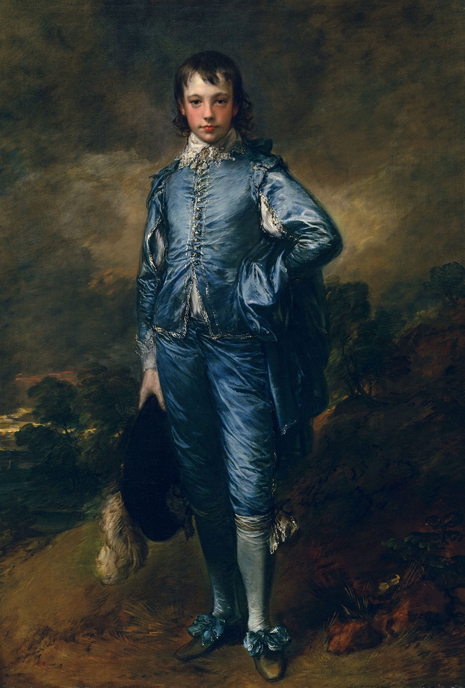
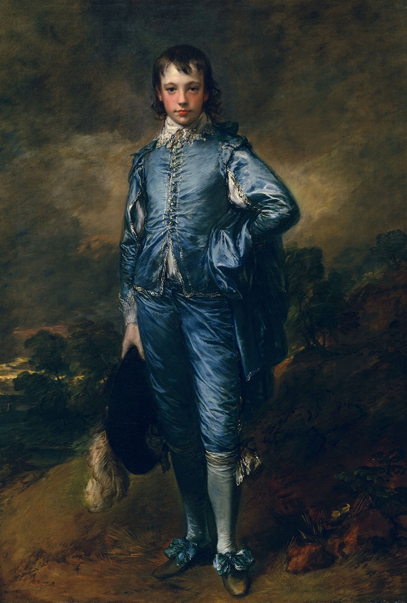

❈ Rococo ❈
According to My Modern Met, renowned for the lighthearted nature of its fine and decorative art, the Rococo style flourished in 18th-century France. Artists working in this frivolous aesthetic built upon the flamboyance of the Baroque period, adapting its awe-inspiring aesthetic to produce equally extravagant yet distinctively playful works of art.
 

According to the National Gallery of Art, Louis XIV's desire to glorify his dignity and the magnificence of France had been served by the monumental and formal qualities of most seventeenth-century French art. But members of the succeeding court began to decorate their homes in a lighter, more delicate manner. This new style has been known since the last century as "rococo," from the French word, rocaille, for rock and shell garden ornamentation. First emerging in the decorative arts, the rococo emphasized pastel colors, sinuous curves, and patterns based on flowers, vines, and shells. Painters turned from religious and historical subjects—though these were never ignored completely—to more intimate scenes, views of daily life, and portraiture.
continue your journey:
part six
Simple Div Link
Learn more about the art of the Rococo movement here